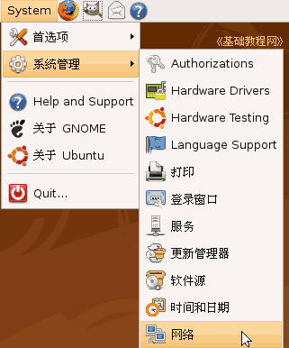
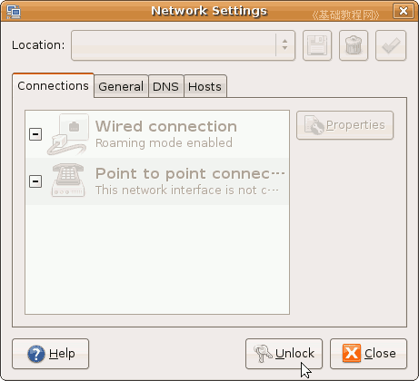
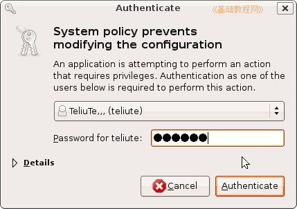
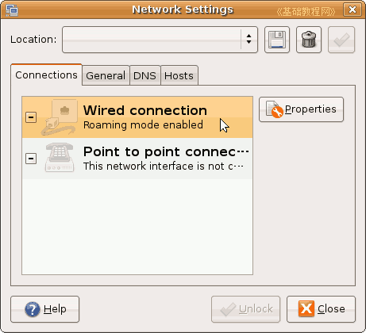
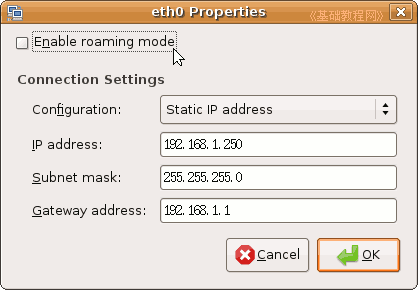
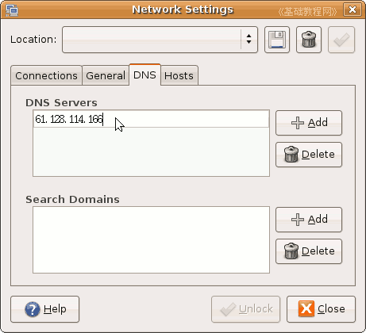
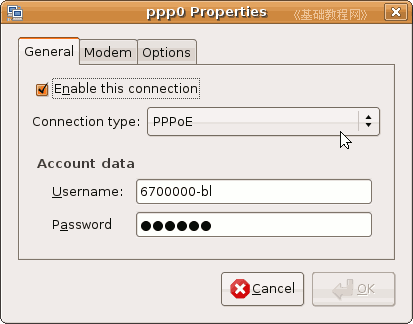
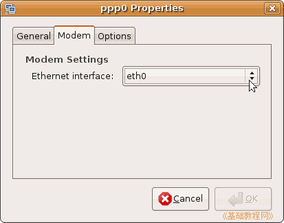
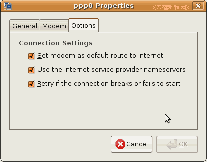
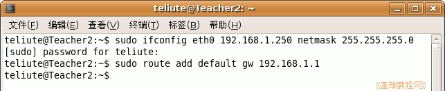

Ubuntu安装基础教程
作者：Teliute 来源：基础教程网
八、连网设置 返回目录 下一课 Ubuntu8.10 系统 Ubuntu9.04 系统Ubuntu跟网络密切相联系，许多应用程序都是从网络中获得，也可以用DVD光盘安装，下面我们来看一个练 习；
1、连接网络
1）在上边面板条上点系统菜单“System－系统管理－网络”，出来一个网络面板；

2）在面板下面点“Unlock”按钮，在出来的密码框中输入自己的密码，然后点右下角的Authen按钮解锁；
 
3）对于局域网上网或路由器上网，点第一个Wired connection(有线连接)，如果是用ADSL宽带猫上网，则选下面的Point to point connection(点对点)，
然后点右边的“Properties”属性按钮；

4）对于局域网上网，去掉上面的勾，点第一个下拉框，选择static IP adress，静态IP地址，
在下面的第一行输入本地IP地址，如192.168.1.250，第二行点一下自动输入子网掩码255.255.255.0，第三行输入网关192.168.1.1
这些可以问问管理员，或者自己查一下WinXP里的；
5）点下边绿色的OK按钮，回到前面的面板，再点上边的“DNS”标签，
在DNS面板里，点两下第一行，出来一闪一闪的光标，输入自己的DNS地址，输完按一下回车键，这可以从上网提供商那儿询问，或自己查一下本地区的域名解析服务器；

3）点“close”关闭按钮，就设置好了，试试如果还不能上网，就重启动一下，
如果是ADSL宽带猫上网，选选第二个以后，也点右边的“Properties”属性按钮，打勾第一行“Enable this connection”先，然后下面选 PPPoE，下面的文本框里输入帐号和密码；

4）再点上边第二个Modem标签，在中间列表框点一下，选eth0；

5）再点上边的“Options”选项面板，把里面的几个勾都打上；

2、常见问题
1）如果设置好以后还不能上网，则重新回去检查一下，局域网的IP地址、网关、DNS，
宽带猫检查帐号、密码，以及Option里的几个打勾，试试重启动一下；
2）如果检查后仍然不行，则可以使用终端命令；
点上边面板条左上角的“应用程序”菜单“Applications－附件－终端”命令，出来一个命令窗口；
3）对于局域网上网，输入命令 sudo ifconfig eth0 192.168.1.250 netmask 255.255.255.0
然后按一下回车键，先输入密码，输的时候看不到，输完按一下回车键，
再输入命令 sudo route add default gw 192.168.1.1 然后按一下回车键；

注意，输入的命令是从 $ 符号后面开始的，输入的密码不会显示，输完按回车键即可；
4）对于ADSL宽带猫上网，输入命令 sudo pppoeconf 然后按一下回车键，同样先要输入密码，输完按一下回车键；
看清楚提示，选“是”一步一步往下走，到ADSL用户名那儿注意，输入自己的帐号和密码，如果有原来的User用户，删除了它，更多方法可以在网上搜索一下；
Ubuntu 8.10系统的联网设置，请参阅第13课第4条：Ubuntu8.10安装
Ubuntu 9.04系统的联网设置，请参阅第15课第3条：Ubuntu9.04安装
本节学习了在Ubuntu系统中，连接上网的基本方法，如果你成功地完成了练习，请继续学习下一课内容；本教程由86团学校TeliuTe制作|著作权所有
基础教程网：http://teliute.org/
美丽的校园……
转载和引用本站内容，请保留版权信息和本站链接。